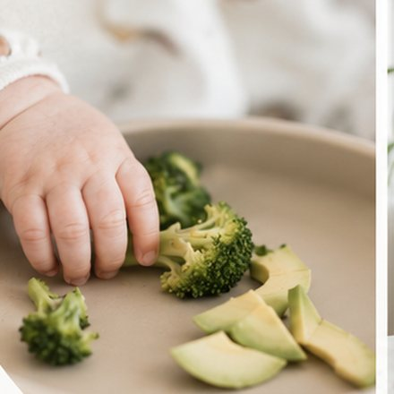
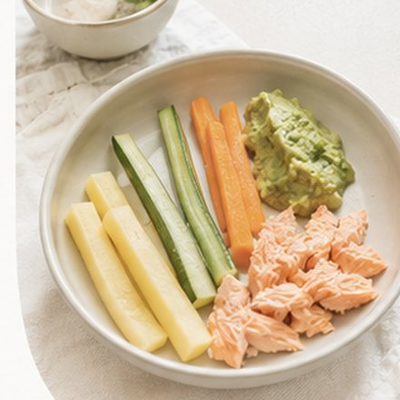
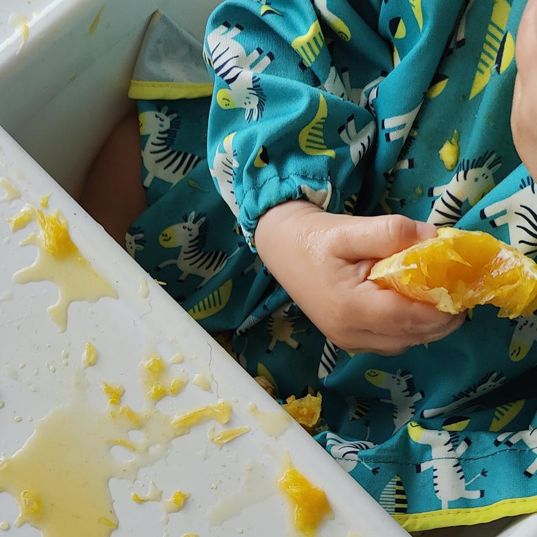
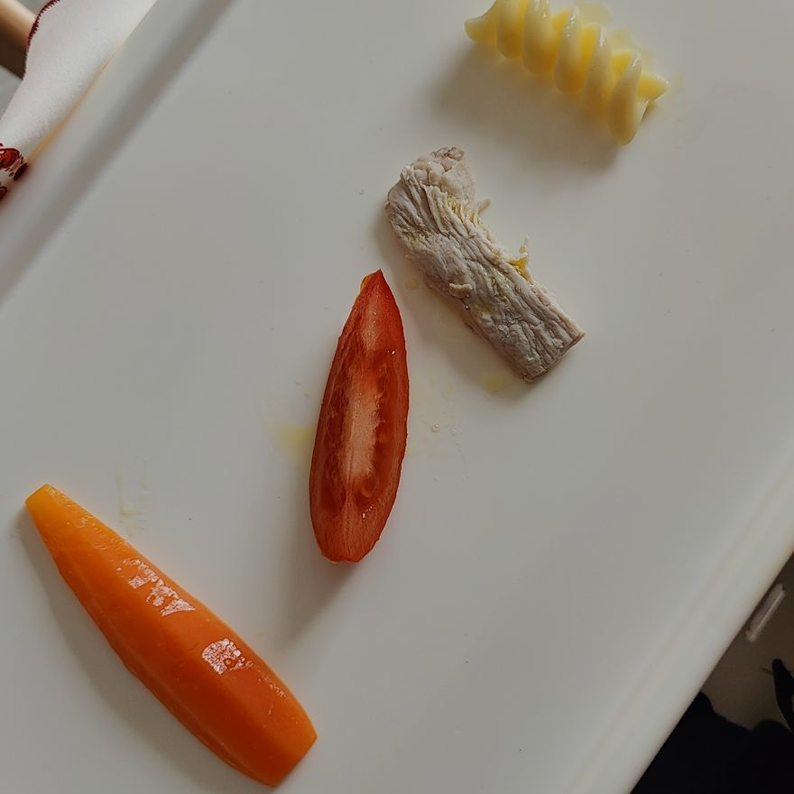

Introdução Alimentar
Descobre como começar a introdução alimentar do teu bebé com segurança, com base em informação atualizada.
30 de setembro de 2026, às 21h00Esta imersão é para ti se:
A introdução alimentar pode trazer ansiedade, dúvida e medo, principalmente quando a informação que recebes é contraditória ou confusa.
No final desta Imersão, vais...
Perceber quando o teu bebé está pronto para começar a comer.

Saber escolher os primeiros alimentos e perceber como os podes combinar e variar.

Introduzir os principais alergénios de forma informada e segura.

Identificar os alimentos e práticas a evitar nesta fase.

Sair com um plano claro para orientar as primeiras semanas da introdução alimentar.
Online, ao vivo e gratuito.
Sou Nutricionista, Pós-Graduada em Nutrição Pediátrica e Escolar e dedico-me, exclusivamente a acompanhar bebés, crianças e famílias nas diferentes fases da alimentação infantil.
Mas sou também mãe de duas crianças e sei, por experiência própria, que a introdução alimentar é uma fase que desperta muitas dúvidas, mesmo quando queremos fazer o melhor pelos nossos filhos.
A introdução alimentar continua rodeada de muitos mitos, crenças e recomendações desatualizadas. E, quando até diferentes profissionais transmitem orientações diferentes, é natural que os pais se sintam confusos.
Foi por isso que fiz desta área uma das minhas principais áreas de atuação e uma das minhas missões: combater a desinformação e ajudar as famílias a tomar decisões informadas, baseadas nas recomendações mais atuais.
Acredito que todos os pais devem ter acesso a informação clara, prática e atualizada, independentemente da sua situação financeira. Foi precisamente por isso que criei esta Imersão.
Conteúdo simples, acessível e baseado naquilo que considero verdadeiramente essencial para começares esta fase com mais confiança, segurança e tranquilidade.
A informação certa pode mudar completamente a forma como uma família vive a introdução alimentar. E acredito que esse conhecimento deve estar ao alcance de todos.
Para mães e pais de bebés com 3 a 6 meses que querem saber como e quando começar a introdução de alimentos (em purés e/ou sólidos).
Sim. A participação em direto é totalmente gratuita.
A sessão será online. Depois de te inscreveres, receberás por email as instruções e o acesso à transmissão.
A gravação vai ficar disponível depois, mas terá um custo. Se quiseres ver gratuitamente, garante o teu lugar e assiste em direto.
Sim, se ainda estás nos primeiros dias. A imersão vai ajudar-te a organizar o que já estás a fazer, esclarecer dúvidas e perceber os próximos passos.
Se procuras informação mais completa sobre a alimentação do bebé dos 6 aos 24 meses, poderás aprofundar estes e outros temas no curso As Primeiras Comidinhas.
Sim. Podes assistir num computador, tablet ou telemóvel com ligação à internet.
Online, ao vivo e gratuito.
30 de setembro de 2026, às 21h00. Lugares limitados.
30 de setembro de 2026, às 21h00. Recebes por email as instruções e o acesso à transmissão.
Lugares limitados. Não enviamos spam — podes cancelar a subscrição quando quiseres.